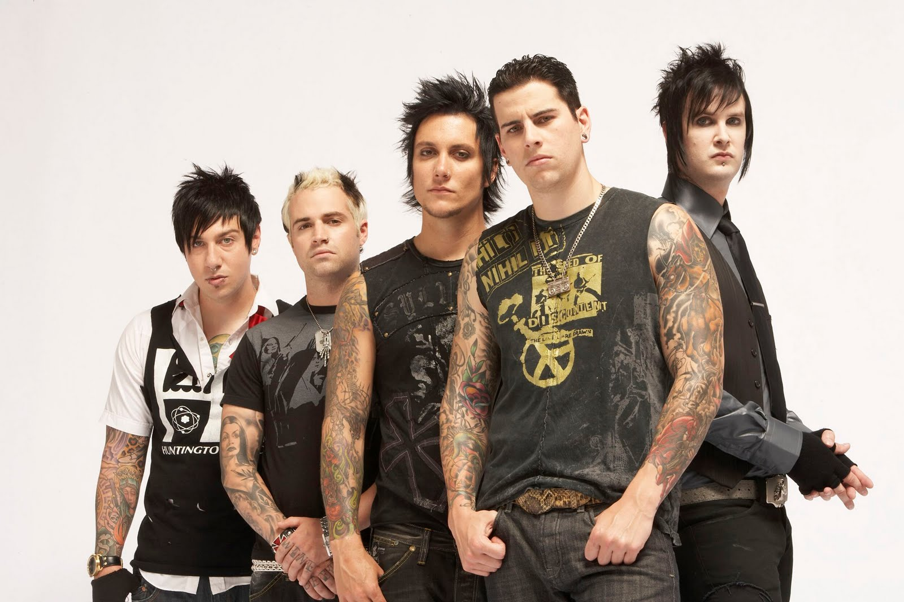
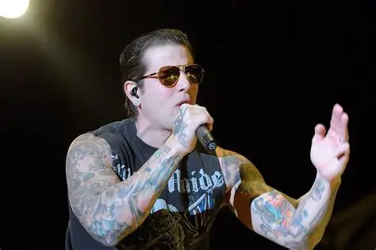
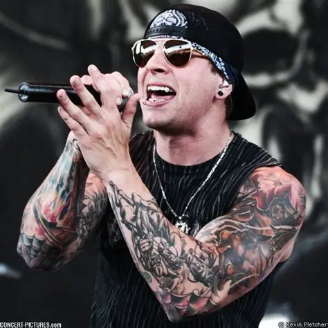
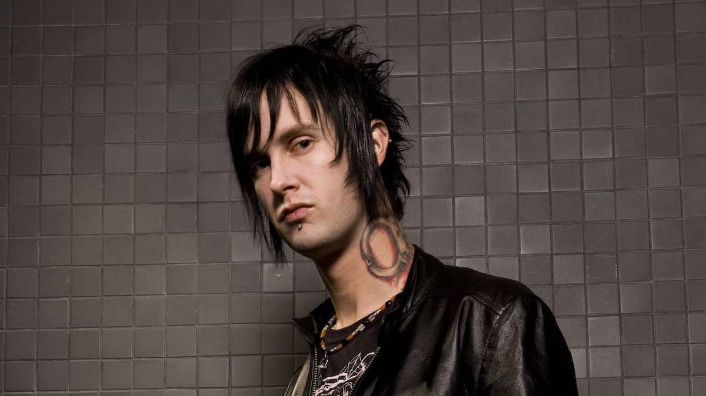
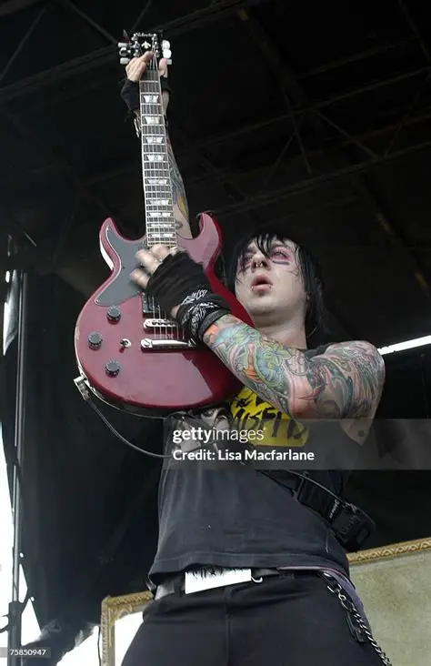
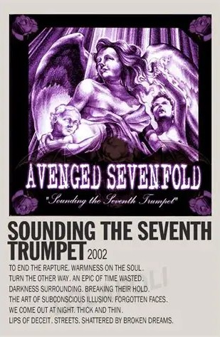

Avenged Sevenfold
Ditulis oleh Frayoga Nursofyan. Pada 30 Oktober 2025
Avenged Sevenfold (A7X) adalah band metal asal Huntington Beach, California, Amerika Serikat, yang terkenal dengan gaya musik keras, melodi gitar rumit, dan tema lagu yang gelap namun emosional


Awal Terbentuknya (1999-2000)
Avenged Sevenfold dibentuknya pada tahun 1999 di Huntington Beach, California, As, oleh empat sahabat sekolah menengah:
- M. Shadow (Matthew Sanders)
- Synyster Gates (Brian Elwin Haner Jr.)
- Zacky Vengeance (Zachary Baker)
- The Rev (James "Jimmy" Sullivan)
- Johnny Christ (Jonathan Lewis Seward)
Vokalis
Gitar Utama
Gitaris Ritme
Drumer & vokal latar
Bass
Nama “Avenged Sevenfold” diambil dari kisah Alkitab tentang Kain dan Habel, di mana Kain “akan dibalaskan tujuh kali lipat” (avenged sevenfold). Nama ini dipilih karena terdengar unik dan penuh makna gelap sesuai gaya musik mereka.



Album
Album Pertama
Sounding The Seventh Trumpet
Album pertama Avenged Sevenfold berjudul Sounding the Seventh Trumpet dan dirilis pada 31 Juli 2001 melalui label independen Good Life Recordings. Album ini menandai awal perjalanan band dalam industri musik dan menunjukkan akar metalcore mereka yang masih mentah dan agresif.

- Latar Belakang & Proses Pembuatan
- M. Shadow
- Zacky Vengeance
- The Rev
- Matt Wendt
- Gaya Musik dan Tema
- Beberapa lagu Penting
- "To End the Rapture"
- "Darkness on the Soul"
- Warmness on the Soul"
- Dampak dan Warisan
Saat album ini direkam, fromasi band masih berbeda dari formasi klasik:
Album ini menampilkan perpaduan metalcore, hardcore, dan emo yang dipengaruhi oleh band-band seperti Metalica, Slayer, Atreyu, dan Eighteen Visions.
Synyster Gates belum resmi bergabung pada saat rekaman album ini; ia baru masuk setelah album ini selesai direkam.
Musiknya masih sangat dipengaruhi oleh matalcore mentah, dengan vokal scream dominan Dari M. Shadows dan beberapa bagian vokal bersih.
The Rev memainkan peran pwnting tidak hanya di drum, tetapi juga menambahkan vokal latar dan beberapa elemen harmoni.
Lirik-lirik album ini banyak membahas perasaan remaja, konflik pribadi, dan keresahan emosional, sesuai dengan usia anggota band saat itu yang masih muda.
Beberapa lagu yang menonjol dari album ini antara lain:
Lagu pembuka dengan riff cepat dan energi agresif.
Menampilkan vokal scream yang khas dan melodi gitar kompleks.
Emosional yang menunjukan sisi lebih lembut band, menandai pertama kalinya mereka menggabungkan vokal bersih secara signifikan
Sounding the Seventh Trumpet awalnya tidak terlalu dikenal secara mainstream, tetapi mulai membangun basis penggemar di kalangan metalcore underground
Album ini menunjukan potensi kreatif Avenged Sevenfold, terutama kombinasi agresivitas metalcore dengan kemampuan menulis lagu melodis.
Banyak elemen dari album ini yang kemudian dikembangkan lebih matang di album kedua, Waking the Fallen (2003), dan menjadi fondasi bagi kesuksesan band di era formasi klasik.